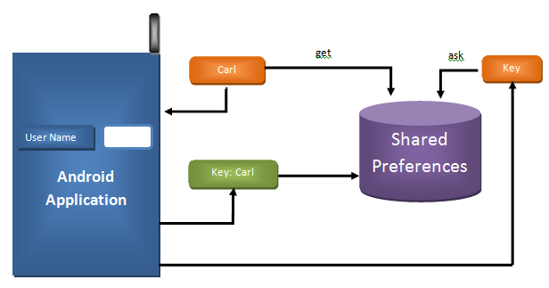
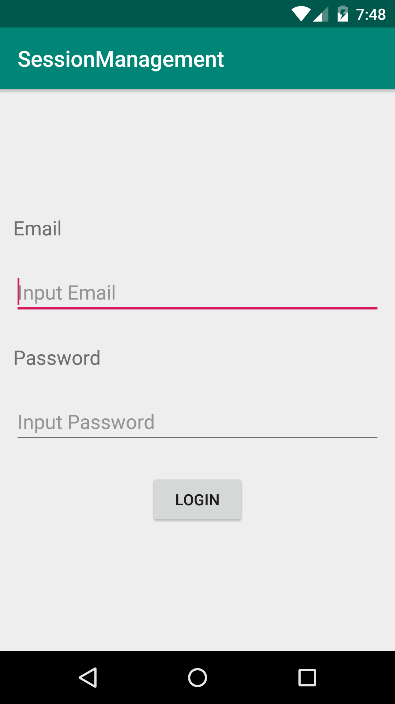

Kemampuan Akhir Yang Direncanakan
- Mahasiswa mampu membuat aplikasi yang memiliki shared preference untuk menyimpan data yang kecil.
- Mahasiswa mampu membuat activity config untuk mengubah behavior aplikasi sesuai konfigurasi yang dipilih oleh user.
Teori
Shared preferences berfungsi untuk menyimpan data yang kecil. Cara untuk menyimpan dan membaca data pada shared preferences menggunakan key-value. Shared preferences merupakan penyimpanan yang bersifat persistent. Berikut adalah ilustrasi dari shared preferences.
 Gambar 1. Ilustrasi Shared Preferences
Betikut adalah contoh penggunaan shared preferences
SharedPreferences prefs = getApplicationContext().getSharedPreferences("sharedprefone”,Context.MODE_WORLD_READABLE);
DateFormat dateFormat = new SimpleDateFormat("yyyy/MM/dd HH:mm:ss");
Date date = new Date();
Editor edit = prefs.edit();
edit.putString("time", dateFormat.format(date));
edit.commit();
Dan berikut cara untuk mendapatkan nilai yang telah disimpan dengan shared preferences.
SharedPreferences testPrefs = myContext.getSharedPreferences ("sharedprefone", Context.MODE_WORLD_READABLE);
String prefString = testPrefs.getString("time", "Couldn't find");
Berikut adalah sintak cara untuk menulis/ menyimpan, mendelete dan mendapatkan data yang telah disimpan pada shared preferences
- Menulis pada shared preferences
```java SharedPreferences pref = getApplicationContext().getSharedPreferences("MyPref", 0);
Editor editor = pref.edit(); editor.putBoolean("key_name", true); // Storing boolean - true/false editor.putString("key_name", "string value"); // Storing string editor.putInt("key_name", "int value"); // Storing integer editor.putFloat("key_name", "float value"); // Storing float editor.putLong("key_name", "long value"); // Storing long
editor.commit(); // commit changes
2. Mendapatkan nilai pada shared preferences
```java
SharedPreferences pref = getApplicationContext().getSharedPreferences("MyPref", 0);
// returns stored preference value
// If value is not present return second param value - In this case null
pref.getString("key_name", null); // getting String
pref.getInt("key_name", null); // getting Integer
pref.getFloat("key_name", null); // getting Float
pref.getLong("key_name", null); // getting Long
pref.getBoolean("key_name", null); // getting boolean
- Menghapus data pada shared preferences
Menghapus data tertentueditor.remove("name"); // delete key name editor.remove("email"); // delete key email editor.commit(); // commit changeseditor.clear(); editor.commit(); // commit changes
Modul
Shared preferences untuk membuat session management user.
- Buat project baru pada android studio dengan nama SessionManagement dan pastikan kalian memilih template template Empty Activity.
Setelah berhasil membuat project baru, tambahkan 1 Activity baru dengan nama Main2Activity. Jadi sekarang terdapat 2 Acticity di dalam project. Langkah selanjutnya adalah membuat tampilan MainActivity seperti berikut:  Gambar 2. Tampilan Login
<?xml version="1.0" encoding="utf-8"?> <LinearLayout xmlns:android="http://schemas.android.com/apk/res/android" xmlns:tools="http://schemas.android.com/tools" android:layout_width="match_parent" android:layout_height="match_parent" android:gravity="center_vertical" android:orientation="vertical" tools:context=".MainActivity"> <TextView android:layout_width="wrap_content" android:layout_height="wrap_content" android:layout_margin="12dp" android:text="Email" android:textSize="18sp" /> <EditText android:id="@+id/editEmail" android:layout_width="match_parent" android:layout_height="wrap_content" android:layout_margin="12dp" android:hint="Input Email" android:inputType="textEmailAddress" /> <TextView android:layout_width="match_parent" android:layout_height="wrap_content" android:layout_margin="12dp" android:text="Password" android:textSize="18sp" /> <EditText android:id="@+id/editPassword" android:layout_width="match_parent" android:layout_height="wrap_content" android:layout_margin="12dp" android:hint="Input Password" android:inputType="textPassword" /> <Button android:id="@+id/buttonLogin" android:layout_width="wrap_content" android:layout_height="wrap_content" android:layout_gravity="center_horizontal" android:layout_margin="12dp" android:text="Login" /> </LinearLayout>- Setelah membuat tampilan seperti pada Gambar 2, langkah selanjutnya adalah menggunakan layout widget yang telah kita buat pada tampilan dengan cara, membuat instansiasi dari EditText dan Button:
Dan pada onCreate definisikan widget tersebut dengan cara menambahkan source code berikut:EditText edtEmail, edtPassword; Button buttonLogin;edtEmail = findViewById(R.id.editEmail); edtPassword = findViewById(R.id.editPassword); buttonLogin = findViewById(R.id.buttonLogin); Selanjutnya kita gunakan shared preferences pada Activity yang ada didalam project,dengan cara membuat class java dengan nama SessionManagement.java
public class SessionManagement { //Share preference private SharedPreferences mSharedPreference; //Editor for Shared preference private SharedPreferences.Editor mEditor; //context private Context mContext; //Shared pref mode int PRIVATE_MODE; //Shared pref name private static final String PREF_NAME = "SharedPrefLatihan"; //Shared Preferences Keys private static final String IS_LOGIN = "IsLoggedIn"; public static final String KEY_EMAIL = "email"; public static final String KEY_PASSWOrD = "email"; public SessionManagement(Context mContext) { this.mContext = mContext; mSharedPreference = this.mContext.getSharedPreferences(PREF_NAME, PRIVATE_MODE); mEditor = mSharedPreference.edit(); } }Gambar 3. SharedPreference.java
- Pada class SessionManagement tambahkan method untuk menyimpan shared preferences dengan nama createLoginSession.
public void createLoginSession(String email, String password){ // Storing login value as TRUE mEditor.putBoolean(IS_LOGIN, true); // Storing email mEditor.putString(KEY_EMAIL, password); // Storing password mEditor.putString(KEY_PASSWOrD, email); mEditor.commit(); } - Selanjutnya pada class SessionManagement, tambahkan method getUserInformation untuk mendapatakan informasi user.
public HashMap<String, String> getUserInformation(){ HashMap<String, String> user = new HashMap<String, String>(); // user email user.put(KEY_EMAIL, mSharedPreference.getString(KEY_EMAIL, null)); // user password user.put(KEY_PASSWOrD, mSharedPreference.getString(KEY_PASSWOrD, null)); // return user return user; } Selanjutnya kita tambahkan method untuk mengecek apakah user sudah login atau belum dengan menambahkan method checkIsLogin pada class SessionManagement.
public boolean isLoggedIn(){ return mSharedPreference.getBoolean(IS_LOGIN, false); } public void checkIsLogin() { // Check login status if (!isLoggedIn()) { // user is not logged in redirect to MainActivity Intent i = new Intent(mContext, MainActivity.class); // Closing all the Activities i.addFlags(Intent.FLAG_ACTIVITY_CLEAR_TOP); // Add new Flag to start new Activity i.setFlags(Intent.FLAG_ACTIVITY_NEW_TASK); mContext.startActivity(i); } }Gambar 6. Method checkLoginStatus
- Method terakhir yang ditambahkan pada SessionManagement.java adalah method logoutUser(). Method ini berfungsi untuk menghapus Shared Preference yang telah disimpan.
 Gambar 7. Method checkLoginStatus
Gambar 7. Method checkLoginStatus Setelah membuat layout untuk aplikasi dan membuat class SessionManagement, selanjutnya gunakan class SessionManagement pada Activity. Dengan cara seperti berikut:
public void logoutUser(){ // Clearing all data from Shared Preferences mEditor.clear(); mEditor.commit(); // After logout redirect user to Loing Activity Intent i = new Intent(mContext, MainActivity.class); i.addFlags(Intent.FLAG_ACTIVITY_CLEAR_TOP); i.setFlags(Intent.FLAG_ACTIVITY_NEW_TASK); mContext.startActivity(i); }Gambar 8. Method logoutUser
Selanjutnya handle event ketika button di click.
if(sessionManagement.isLoggedIn()){ goToActivity(); } buttonLogin.setOnClickListener(new View.OnClickListener() { @Override public void onClick(View view) { sessionManagement.createLoginSession(edtEmail.getText().toString(), edtPassword.getText().toString()); goToActivity(); } }); private void goToActivity(){ Intent mIntent = new Intent(getApplicationContext(), Main2Activity.class); startActivity(mIntent); }Gambar 9. Handle Click Event
Sampai tahap ini kita sudah mengimplementasikan shared preference untuk membuat session pada aplikasi android. Jika kita melakukan login kemudian kita menutup aplikasi yang telah kita buat, maka session akan tetap ada sehingga aplikasi secara otomatis akan membuat Main2Activity.
Tugas
- Tambahkan pengecekan / validasi bahwa email dan password tidak empty dan pastikan karakter yang dimasukkan bukan spasi didalam click event MainActivity
- Didalam Main2Activity gunakan class SessionManagement untuk mendapatkan informasi email dari user yang telah melakukan Login dan gunakan method logutuser untuk menghapus session yang telah dibuat. Dan setelah logout maka aplikasi akan membuat MainActivity.java. Layout pada Main2Activity gunakan layout berikut:
<?xml version="1.0" encoding="utf-8"?>
<LinearLayout xmlns:android="http://schemas.android.com/apk/res/android"
xmlns:app="http://schemas.android.com/apk/res-auto"
xmlns:tools="http://schemas.android.com/tools"
android:layout_width="match_parent"
android:layout_height="match_parent"
android:orientation="vertical"
android:gravity="center_horizontal"
android:layout_margin="10dp"
tools:context=".Main2Activity">
<TextView
android:id="@+id/tvEmail"
android:layout_width="wrap_content"
android:layout_height="wrap_content"
android:text="TextView"
android:textSize="25sp"/>
<Button
android:id="@+id/buttonLogout"
android:layout_width="wrap_content"
android:layout_height="wrap_content"
android:text="Logout" />
</LinearLayout>